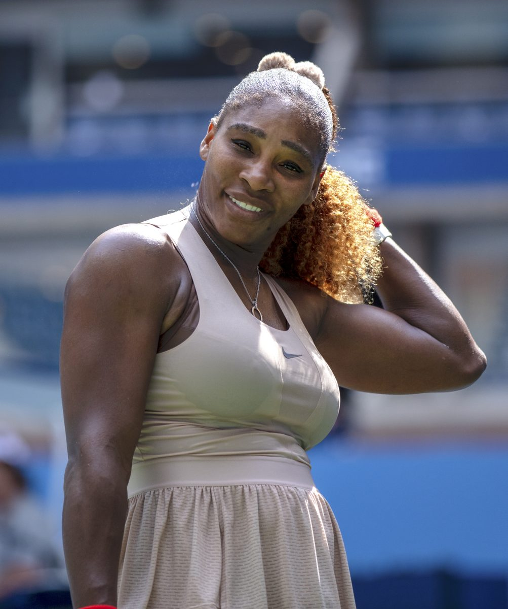
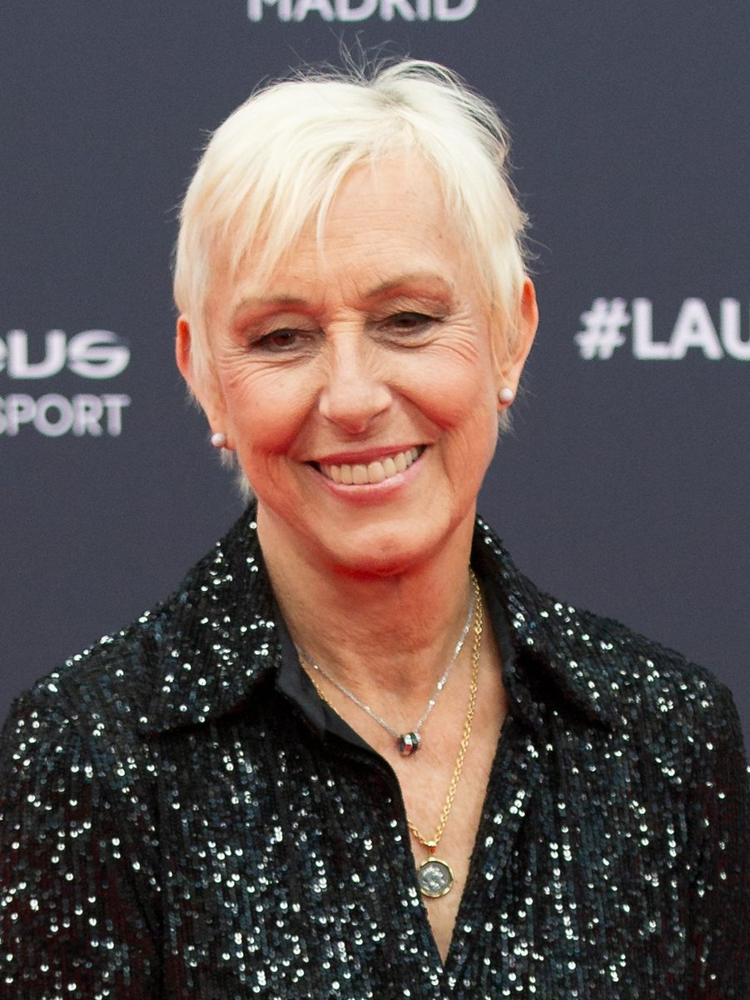

Maria Sharapova: From a Cold Start to Tennis Immortality
Tracing the remarkable journey of the Russian icon who conquered Wimbledon as a teenager, claimed the career Grand Slam, and left a lasting imprint on the sport.

The journey began far away from the sun-drenched courts of the tennis tour, in the shadow of historical events. Maria Yuryevna Sharapova was born on April 19, 1987, in Nyagan, in the Soviet Union. Her parents had moved from Gomel just before her birth, seeking safety from the regional fallout of the 1986 Chernobyl nuclear disaster. By 1990, the family had relocated to Sochi, where a chance acquaintance would alter the course of tennis history. Aleksandr Kafelnikov, father of future Grand Slam champion Yevgeny, handed four-year-old Maria her first tennis racquet. What started as casual hitting in a local park quickly revealed a rare gift. Veteran coach Yuri Yutkin noticed her exceptional hand-eye coordination right away, setting the wheels in motion for an extraordinary path.
That path required immense sacrifice. In 1993, at just six years old, Sharapova attended a Moscow tennis clinic run by Martina Navratilova. The legendary champion recognized her potential and urged her father to seek professional training at the IMG Academy in Florida. Armed with $700 in savings and speaking no English, Yuri and his young daughter moved to the United States in 1994, separated from Sharapova's mother by visa restrictions for two years. Yuri took on low-paying jobs to fund her early lessons until IMG agreed to cover her academy tuition in 1995. It was a crucible of early independence and relentless work that forged a fierce competitive spirit.
The Meteoric Rise and Grand Slam Glory

Sharapova's transition from junior promise to global phenomenon happened at breathtaking speed. In November 2000, she won the Eddie Herr International Junior Tennis Championships at age 13, earning the tournament's Rising Star Award. She turned professional on her 14th birthday in 2001 and wasted little time making her presence felt on the senior tour. By the end of 2003, she had captured her first two WTA singles titles in Japan and Quebec City, earning the WTA Newcomer of the Year honor.
The defining moment of her early career arrived in the summer of 2004. Seeded 13th at Wimbledon at just 17 years old, Sharapova navigated the draw with growing confidence before facing two-time defending champion Serena Williams in the final. In a stunning display of power and composure, the teenager defeated the top seed in straight sets to capture her maiden Grand Slam title. She became the third-youngest woman to win Wimbledon, capturing the imagination of sports fans worldwide and ushering in a new era for Russian tennis. She followed that triumph by winning the WTA Tour Championships later that year and climbed to world No. 1 in August 2005.
Overcoming Obstacles and Completing the Slam
Over the following seasons, Sharapova's career was a testament to resilience against physical adversity. Recurring injuries threatened to derail her momentum, leading to fluctuations in the rankings. Her long quest to master clay, a surface that once troubled her movement, ended in triumph at the 2012 French Open, where she beat Sara Errani in the final to lift the Coupe Suzanne Lenglen. That victory made her one of just ten women in tennis history to complete a career Grand Slam. Weeks later, she added an Olympic silver medal at the London Games, serving as Russia's flag bearer.

The later chapters of her career brought rigorous challenges. In 2016, a failed drug test for meldonium led to an initial suspension by the International Tennis Federation. Following an appeal, the Court of Arbitration for Sport reduced the ban from two years to 15 months, finding that she had not intended to cheat and had taken the substance on a doctor's recommendation. Sharapova returned to the tour in April 2017, competing until her retirement in 2020.
A Lasting Legacy
Beyond her 36 WTA singles titles and five major championships, Sharapova built a formidable footprint outside the sport. Forbes named her the highest-paid female athlete in the world for 11 consecutive years, while her business ventures included launching a mentorship program for women entrepreneurs in 2018. She also served as a United Nations Development Programme Goodwill Ambassador, focusing on Chernobyl recovery efforts. Recognized by Tennis Channel and Time among the greatest players in history, her story came full circle in 2025 with her induction into the International Tennis Hall of Fame—cementing her place among the legends who transformed the modern game.